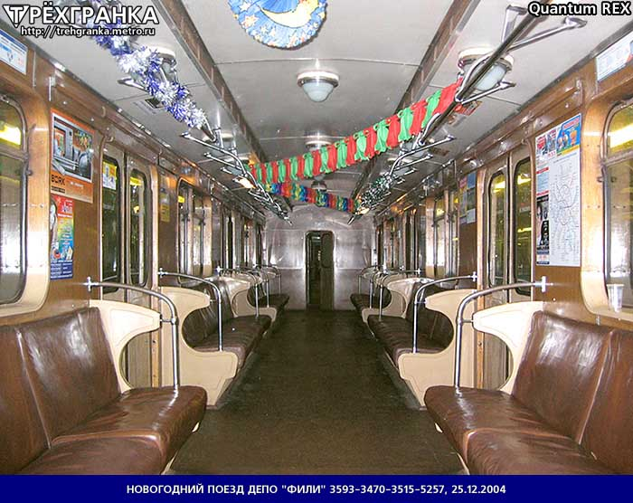
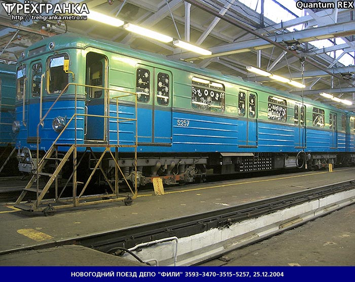

🎄 Новогодний Ежик 2004 🎅
В 2004 году в ТЧ-9 «Фили» работники сделали новогодний состав на базе «Е». Это был первый новогодний поезд Московского метрополитена.
На составе была организована VIP-поездка для работников депо и их детей. Состав по сравнению с НГ ежиком 2016–2024 был украшен хуже, но в то время это был отличный новогодний поезд.
Общая информация
| Параметр | Значение |
|---|---|
| Год создания | 2004 |
| Депо | ТЧ-9 «Фили» |
| Модель | Е |
| Статус | Первый новогодний поезд Мосметро |
| Текущее состояние | Списан и утилизирован |
История появления
В 2004 году в ТЧ-9 «Фили» работники сделали новогодний состав на базе «Е». На окнах были рисунки, посвящённые Новому году, в салоне повесили гирлянды.
Создание состава
В ТЧ-9 «Фили» работники сделали новогодний состав на базе «Е».
VIP-поездка
На составе была организована VIP-поездка для работников депо и их детей.
Выход с пассажирами
Состав после поездки с работниками зашёл в депо, после чего вышел с пассажирами.
Снятие украшений и утилизация
Через небольшое количество времени украшения убрали, состав проездил ещё немного, после чего был списан и утилизирован.
Важно: Этот состав стал первым новогодним поездом Московского метрополитена и положил начало традиции, которая продолжается до сих пор.
Особенности оформления
🪟 Окна
На окнах были рисунки, посвящённые Новому году.
🎄 Салон
В салоне повесили гирлянды.
🎫 VIP-поездка
Организована для работников депо и их детей.
🏆 Первый в истории
Стал первым новогодним поездом Московского метрополитена.
Фотогалерея


Нажмите на фото для увеличения. Источник: «Трехгранка»
«Новогодний Ежик 2004 — это первый новогодний поезд Московского метрополитена. С него началась традиция, которая продолжается уже более 20 лет».